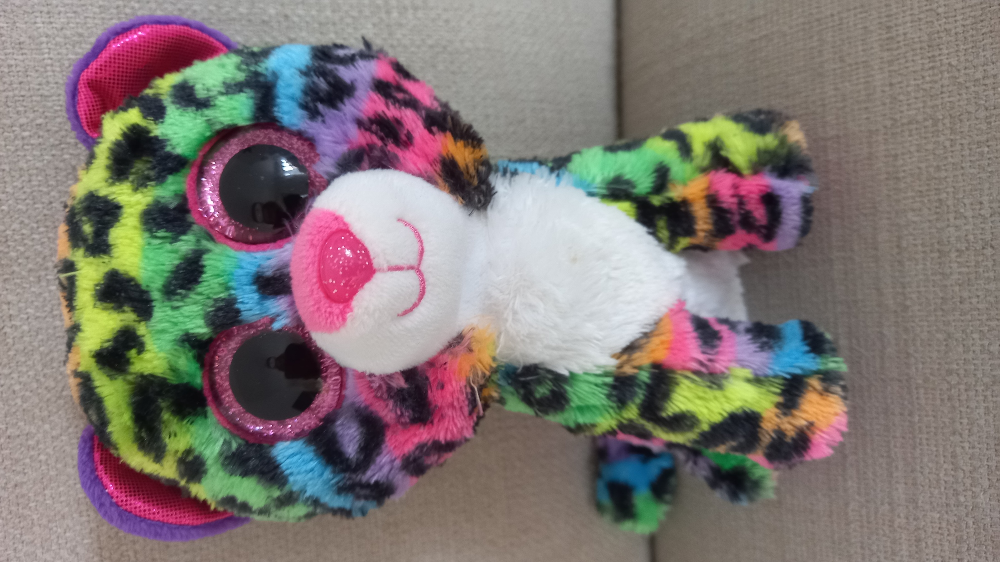

Her colours are the brightest out of her class!
In 2015, Dotty was born, with black fur!
That's right! Cats with Rainbow fur don't become fully rainbow until they are at least 5!
She managed to become fully rainbow at 5 1/2 years old, which is unusally quick.
2. She is the only member of her family with all the colours of the rainbow on her!
That's right! Cats with Rainbow fur don't become fully rainbow until they are at least 5!
She managed to become fully rainbow at 5 1/2 years old, which is unusally quick.
Fun Facts:
1. She has two sisters: Livvy and Glamour!
2. She is the only member of her family with all the colours of the rainbow on her!